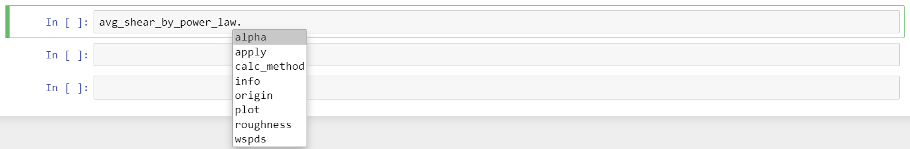

How to calculate shear¶
[1]:
import datetime
print('Last updated: {}'.format(datetime.date.today().strftime('%d %B, %Y')))
Last updated: 18 July, 2019
Outline:¶
The brightwind library allows for shear to be calculated from wind speed measurements using either the power law or the logarithmic law, through the calculation of the shear exponent (alpha) or the roughness coefficient respectively. Alpha/roughness values can be calculated by average wind speed, time of day/month, direction sector or by individual timestamp. The calculated shear can then be applied to wind speed timeseries to scale the wind speeds from one height to another.
This tutorial will cover:
How to calculate average shear and use it to scale a wind speed timeseries.
How to calculate shear by direction sector.
How to calculate shear by time of day and month.
How to calculate shear by individual timestamp.
How to scale a wind speed timeseries using a predefined value of alpha/roughness.
Step 1: Calculate average shear and scale a wind speed timeseries¶
The average shear exponent can be calculated across an entire timeseries using the Average class in the brightwind library.
First, upload the relevant data, defining the anemometers data and heights of these anemometers.
[2]:
import brightwind as bw
import pprint
# load data as dataframe and apply cleaning (see previous tutorials for these.)
data = bw.load_csv(r'C:\Users\Stephen\Documents\Analysis\demo_data.csv')
data = bw.apply_cleaning(data, r'C:\Users\Stephen\Documents\Analysis\demo_cleaning_file.csv')
# Specify columns in data which contain the anemometer measurements from which to calculate shear
anemometers = data[['Spd80mN','Spd60mN','Spd40mN']]
# Specify the heights of these anemometers in a list
heights = [80, 60, 40]
Cleaning applied. (Please remember to assign the cleaned returned DataFrame to a variable.)
To calculate average shear from the data contained in
anemometersusing the power law, type the following:
[3]:
avg_shear_by_power_law = bw.Shear.Average(anemometers, heights)
To calculate shear using the log law instead of the power law, simply add the argument
calc_method='log_law'. This is an option for all shear calculations.
[4]:
avg_shear_by_log_law = bw.Shear.Average(anemometers, heights, calc_method='log_law')
This function returns an object, i.e.
avg_shear_by_power_laworavg_shear_by_log_law, which contains lots of information about the calculation that was carried out.To view what information is available, such as a plot and the average alpha value, type the following and press ‘Tab’:

To show the average alpha calculated, type:
[5]:
avg_shear_by_power_law.alpha
[5]:
0.1434292905861121
To show the average roughness calculated, type:
[6]:
avg_shear_by_log_law.roughness
[6]:
0.054854089027648524
To show the plot, type:
[7]:
avg_shear_by_power_law.plot
[7]:
Other useful information about the object can be obtained using
.info. This is wrapped with the ‘pretty print’ library to make it more readable.
[8]:
pprint.pprint(avg_shear_by_log_law.info)
{'input data': {'calculation_method': 'log_law',
'input_wind_speeds': {'column_names': ['Spd80mN',
'Spd60mN',
'Spd40mN'],
'heights(m)': [80, 60, 40],
'min_spd(m/s)': 3}},
'output data': {'concurrent_period_in_years': 1.511,
'roughness': 0.054854089027648524}}
Once the alpha/roughness values have been calculated, they can be applied to a wind speed timeseries to scale the wind speeds from one height to another.
To scale the wind speed timeseries, i.e.
data['Spd80mN'], from 80 m to 100 m height using the average alpha value previously calculated, use the.apply()function attached to the avg_shear_by_power_law object.
[9]:
# .head(10) is simply used to not display so much data
avg_shear_by_power_law.apply(data['Spd80mN'], 80, 100).head(10)
[9]:
Timestamp
2016-01-09 15:30:00 NaN
2016-01-09 15:40:00 NaN
2016-01-09 17:00:00 NaN
2016-01-09 17:10:00 7.622085
2016-01-09 17:20:00 8.236436
2016-01-09 17:30:00 8.611242
2016-01-09 17:40:00 8.394412
2016-01-09 17:50:00 7.723272
2016-01-09 18:00:00 7.799679
2016-01-09 18:10:00 8.487339
Name: Spd80mN_scaled_to_100m, dtype: float64
To scale the same data, but using the roughness value calculated via the log law, use the
.apply()function attached to theavg_shear_by_log_lawobject:
[10]:
avg_shear_by_log_law.apply(data['Spd80mN'], 80, 100).head(10)
[10]:
Timestamp
2016-01-09 15:30:00 NaN
2016-01-09 15:40:00 NaN
2016-01-09 17:00:00 NaN
2016-01-09 17:10:00 7.608111
2016-01-09 17:20:00 8.221336
2016-01-09 17:30:00 8.595455
2016-01-09 17:40:00 8.379023
2016-01-09 17:50:00 7.709113
2016-01-09 18:00:00 7.785380
2016-01-09 18:10:00 8.471779
Name: Spd80mN_scaled_to_100m, dtype: float64
This sheared up wind speed timeseries can also be assigned to a new variable in your DataFrame.
[11]:
data['Spd100m'] = avg_shear_by_power_law.apply(data['Spd80mN'], 80, 100)
data.Spd100m.head(10)
[11]:
Timestamp
2016-01-09 15:30:00 NaN
2016-01-09 15:40:00 NaN
2016-01-09 17:00:00 NaN
2016-01-09 17:10:00 7.622085
2016-01-09 17:20:00 8.236436
2016-01-09 17:30:00 8.611242
2016-01-09 17:40:00 8.394412
2016-01-09 17:50:00 7.723272
2016-01-09 18:00:00 7.799679
2016-01-09 18:10:00 8.487339
Name: Spd100m, dtype: float64
It is also possible to plot the two shear profiles using both calculation methods overlaid on each other using the argument plot_both. In addition, the profiles can be extended up to any height using max_plot_height. The apply function will only apply the resulting shear based on the calc_method specified, in this case ‘power_law’.
[12]:
avg_shear_by_power_law = bw.Shear.Average(anemometers, heights, plot_both=True,
max_plot_height=120)
Step 2: Calculate shear by direction sector¶
If you have direction measurements to accompany wind speed measurements, the shear can be calculated for specified direction sectors using the BySector class.
To calculate the shear by direction sector, simply type:
[13]:
shear_by_sector_power_law = bw.Shear.BySector(anemometers, heights, data['Dir78mS'])
Again, various information such as the alpha values can be displayed from this object:
[14]:
shear_by_sector_power_law.alpha
[14]:
345.0-15.0 0.119370
15.0-45.0 0.145463
45.0-75.0 0.096945
75.0-105.0 0.044056
105.0-135.0 0.054538
135.0-165.0 0.116558
165.0-195.0 0.354113
195.0-225.0 0.213977
225.0-255.0 0.096221
255.0-285.0 0.054575
285.0-315.0 0.077513
315.0-345.0 0.108680
dtype: float64
The direction bins can be defined by the user for use in the BySector calculations.
These bins must begin at 0, be listed as increasing and advise they are even sizes.
For example, to use the custom bins [0,30,60,90,120,150,180,210,240,270,300,330,360], simply type the following:
[15]:
custom_bins = [0,30,60,90,120,150,180,210,240,270,300,330,360]
shear_by_sector_power_law_custom_bins = bw.Shear.BySector(anemometers, heights, data['Dir78mS'],
direction_bin_array=custom_bins)
[16]:
shear_by_sector_power_law.alpha
[16]:
345.0-15.0 0.119370
15.0-45.0 0.145463
45.0-75.0 0.096945
75.0-105.0 0.044056
105.0-135.0 0.054538
135.0-165.0 0.116558
165.0-195.0 0.354113
195.0-225.0 0.213977
225.0-255.0 0.096221
255.0-285.0 0.054575
285.0-315.0 0.077513
315.0-345.0 0.108680
dtype: float64
To scale the same data, but using the alpha values calculated for each direction section use the .apply() function attached to the shear_by_sector_by_power_law object. Corresponding wind direction measurements for the wind speeds to be scaled must also be passed to the function.
Using
data['Dir78mS']as the direction measurements, type:
[17]:
shear_by_sector_power_law.apply(data['Spd80mN'], data['Dir78mS'], 80, 100).head(10)
[17]:
Timestamp
2016-01-09 17:10:00 7.472387
2016-01-09 17:20:00 8.074672
2016-01-09 17:30:00 8.442117
2016-01-09 17:40:00 8.229546
2016-01-09 17:50:00 7.571587
2016-01-09 18:00:00 7.646493
2016-01-09 18:10:00 8.320648
2016-01-09 18:20:00 9.535341
2016-01-09 18:30:00 10.031341
2016-01-09 18:40:00 10.517218
Name: Spd80mN_scaled_to_100m, dtype: float64
Step 3: Calculate shear by time of day and month¶
Shear can also be calculated by time of day and month using the TimeOfDay class. To do so, type:
[18]:
shear_by_tod_power_law = bw.Shear.TimeOfDay(anemometers, heights, segments_per_day=24,
plot_type='line')
The alpha values calculated are saved in a DataFrame and can be accessed using
.alpha():
[19]:
shear_by_tod_power_law.alpha
[19]:
| Jan | Feb | Mar | Apr | May | Jun | Jul | Aug | Sep | Oct | Nov | Dec | |
|---|---|---|---|---|---|---|---|---|---|---|---|---|
| 00:00:00 | 0.203745 | 0.137365 | 0.190512 | 0.156005 | 0.184894 | 0.167457 | 0.174981 | 0.177678 | 0.214404 | 0.151436 | 0.187305 | 0.184245 |
| 01:00:00 | 0.184187 | 0.142620 | 0.203802 | 0.149316 | 0.193490 | 0.168509 | 0.193434 | 0.147225 | 0.213561 | 0.151838 | 0.191275 | 0.191104 |
| 02:00:00 | 0.165501 | 0.149974 | 0.195065 | 0.144426 | 0.215443 | 0.163694 | 0.194465 | 0.156861 | 0.222912 | 0.152570 | 0.202989 | 0.189549 |
| 03:00:00 | 0.187611 | 0.154534 | 0.196334 | 0.150126 | 0.183169 | 0.168200 | 0.187914 | 0.137204 | 0.232028 | 0.145416 | 0.195471 | 0.183143 |
| 04:00:00 | 0.191284 | 0.162013 | 0.184757 | 0.147184 | 0.184090 | 0.164632 | 0.181813 | 0.128768 | 0.239333 | 0.152643 | 0.182418 | 0.187397 |
| 05:00:00 | 0.181648 | 0.162595 | 0.184140 | 0.136194 | 0.187579 | 0.161545 | 0.173963 | 0.145848 | 0.234071 | 0.162066 | 0.172788 | 0.187372 |
| 06:00:00 | 0.185978 | 0.160536 | 0.178574 | 0.133937 | 0.182293 | 0.144034 | 0.152627 | 0.154029 | 0.241704 | 0.155654 | 0.177581 | 0.190635 |
| 07:00:00 | 0.198043 | 0.165445 | 0.163970 | 0.126975 | 0.159511 | 0.127946 | 0.126003 | 0.155703 | 0.232996 | 0.147648 | 0.159044 | 0.192888 |
| 08:00:00 | 0.186950 | 0.167700 | 0.150501 | 0.101867 | 0.123486 | 0.121164 | 0.094774 | 0.135711 | 0.221852 | 0.149835 | 0.145703 | 0.190476 |
| 09:00:00 | 0.171201 | 0.166015 | 0.135286 | 0.082590 | 0.105539 | 0.100572 | 0.084312 | 0.116124 | 0.202722 | 0.143551 | 0.150881 | 0.190909 |
| 10:00:00 | 0.177597 | 0.158721 | 0.125386 | 0.061679 | 0.096166 | 0.092808 | 0.077888 | 0.098125 | 0.169430 | 0.123623 | 0.141777 | 0.200282 |
| 11:00:00 | 0.164836 | 0.138951 | 0.107230 | 0.053947 | 0.092473 | 0.092409 | 0.082909 | 0.088985 | 0.155293 | 0.106861 | 0.131293 | 0.180275 |
| 12:00:00 | 0.151644 | 0.120562 | 0.092782 | 0.051372 | 0.076404 | 0.084767 | 0.079848 | 0.087854 | 0.157177 | 0.087600 | 0.119419 | 0.163308 |
| 13:00:00 | 0.140057 | 0.117251 | 0.085993 | 0.049824 | 0.066704 | 0.086438 | 0.072589 | 0.086872 | 0.145434 | 0.088522 | 0.121974 | 0.171817 |
| 14:00:00 | 0.145932 | 0.114892 | 0.084063 | 0.046276 | 0.050498 | 0.083590 | 0.072407 | 0.081974 | 0.135286 | 0.085481 | 0.125986 | 0.160342 |
| 15:00:00 | 0.152446 | 0.115295 | 0.086244 | 0.051721 | 0.061646 | 0.082378 | 0.075099 | 0.082071 | 0.139105 | 0.090707 | 0.134735 | 0.153169 |
| 16:00:00 | 0.157036 | 0.112205 | 0.099400 | 0.053768 | 0.065868 | 0.092252 | 0.078187 | 0.092003 | 0.144897 | 0.111362 | 0.144801 | 0.149117 |
| 17:00:00 | 0.161031 | 0.124340 | 0.098825 | 0.061831 | 0.080752 | 0.096211 | 0.090054 | 0.109184 | 0.170698 | 0.130001 | 0.164673 | 0.165464 |
| 18:00:00 | 0.169558 | 0.141341 | 0.123993 | 0.086016 | 0.093784 | 0.108223 | 0.096958 | 0.132730 | 0.187168 | 0.150463 | 0.191138 | 0.154565 |
| 19:00:00 | 0.173715 | 0.145777 | 0.147756 | 0.091637 | 0.112181 | 0.114127 | 0.107774 | 0.156964 | 0.206028 | 0.153758 | 0.192586 | 0.163433 |
| 20:00:00 | 0.183797 | 0.134578 | 0.171624 | 0.121502 | 0.146832 | 0.130339 | 0.131146 | 0.170098 | 0.224173 | 0.149378 | 0.193729 | 0.175612 |
| 21:00:00 | 0.194090 | 0.148994 | 0.173208 | 0.141769 | 0.150999 | 0.150260 | 0.158142 | 0.185471 | 0.231259 | 0.149618 | 0.187084 | 0.182947 |
| 22:00:00 | 0.184541 | 0.143998 | 0.182543 | 0.154415 | 0.167849 | 0.171730 | 0.175511 | 0.196477 | 0.232614 | 0.149216 | 0.182953 | 0.199505 |
| 23:00:00 | 0.185586 | 0.136248 | 0.179588 | 0.156049 | 0.178810 | 0.182215 | 0.178807 | 0.176920 | 0.215473 | 0.145566 | 0.178858 | 0.201526 |
Arguments such as
segments_per_dayandsegement_start_timecan be set to specify the number of time period segments in a day and the start time of the first segment. Different plot types are also available, such as'step'and'12x24', shown below.
[20]:
shear_by_tod_power_law = bw.Shear.TimeOfDay(anemometers, heights, segments_per_day=2,
segment_start_time=7, plot_type='step')
[21]:
shear_by_tod_power_law = bw.Shear.TimeOfDay(anemometers, heights, segments_per_day=24,
segment_start_time=7, plot_type='12x24')
By setting
by_month=False, shear is averaged over all months for each daily segment:
[22]:
shear_by_tod_power_law = bw.Shear.TimeOfDay(anemometers, heights, segments_per_day=24,
segment_start_time=7, by_month=False,
plot_type='line')
To apply the shear values calculated, as previously:
[23]:
shear_by_tod_power_law.apply(data['Spd80mN'],80,100).head(10)
[23]:
2016-01-09 15:30:00 NaN
2016-01-09 15:40:00 NaN
2016-01-09 17:00:00 NaN
2016-01-09 17:10:00 7.584182
2016-01-09 17:20:00 8.195478
2016-01-09 17:30:00 8.568421
2016-01-09 17:40:00 8.352669
2016-01-09 17:50:00 7.684866
2016-01-09 18:00:00 7.787329
2016-01-09 18:10:00 8.473901
Name: Spd80mN_scaled_to_100m, dtype: float64
Step 4: Calculating shear by timestamp¶
Shear can be calculated for each individual timestamp of a wind speed data series using the TimeSeries class. This takes some time, as tens of thousands of calculations must be carried out, so try it first on a subset of the data, i.e. the first 1000 entries. To do so, type:
[24]:
anemometers_subset = anemometers[:1000]
ts_by_power_law = bw.Shear.TimeSeries(anemometers_subset, heights)
In other methods such as Average and BySector, shear is only calculated for each timestamp where an anemometer reading exists at each height. This can be problamatic when calculating shear by individual timestamps. To maximise the ammount of data used for shear calculations and increase coverage we can calculate shear for every timestamp where two or more anemometer readings exist. If you wish to do this, pass the maximise_data=True argument to the function. Please be aware that due
to the nature of calculating shear for every timestamp, this function takes some time to run.
[25]:
ts_by_power_law_max = bw.Shear.TimeSeries(anemometers_subset, heights, maximise_data=True)
As can be seen in the
.infoof each object, the coverage increased whenmaximise_datawas used.
[26]:
pprint.pprint(ts_by_power_law.info)
{'input data': {'calculation_method': 'power_law',
'input_wind_speeds': {'column_names': ['Spd80mN',
'Spd60mN',
'Spd40mN'],
'heights(m)': [80, 60, 40],
'min_spd(m/s)': 3}},
'output data': {'alpha': Timestamp
2016-01-09 17:10:00 0.237991
2016-01-09 17:20:00 -0.027865
2016-01-09 17:30:00 0.002393
2016-01-09 17:40:00 0.028834
2016-01-09 17:50:00 -0.028915
2016-01-09 18:00:00 -0.006296
2016-01-09 18:10:00 0.078150
2016-01-09 18:20:00 -0.019781
2016-01-09 18:30:00 0.150555
2016-01-09 18:40:00 0.080081
2016-01-09 18:50:00 0.078663
2016-01-09 19:00:00 0.007701
2016-01-09 19:10:00 0.060346
2016-01-09 19:20:00 0.049886
2016-01-09 19:30:00 0.001436
2016-01-09 19:40:00 -0.044120
2016-01-09 19:50:00 0.068740
2016-01-09 20:00:00 0.376291
2016-01-09 20:10:00 0.186492
2016-01-09 20:20:00 0.016814
2016-01-09 20:30:00 0.110506
2016-01-09 20:40:00 -0.269870
2016-01-09 21:30:00 0.415503
2016-01-09 21:40:00 0.247307
2016-01-09 21:50:00 0.315225
2016-01-09 22:00:00 0.350825
2016-01-09 22:10:00 0.115856
2016-01-09 22:20:00 0.174466
2016-01-09 22:30:00 0.113918
2016-01-09 22:40:00 0.080972
...
2016-01-15 20:20:00 0.193663
2016-01-15 20:30:00 0.481706
2016-01-15 20:40:00 0.528941
2016-01-15 20:50:00 0.403534
2016-01-15 21:00:00 0.598280
2016-01-15 21:30:00 0.279952
2016-01-15 21:40:00 0.327214
2016-01-15 21:50:00 0.154754
2016-01-15 22:10:00 0.569411
2016-01-15 22:50:00 0.411465
2016-01-15 23:30:00 0.043801
2016-01-16 01:10:00 0.337463
2016-01-16 01:20:00 0.254405
2016-01-16 01:30:00 0.281167
2016-01-16 12:20:00 0.177549
2016-01-16 12:30:00 -0.005959
2016-01-16 12:40:00 -0.022992
2016-01-16 12:50:00 0.008555
2016-01-16 13:00:00 -0.074354
2016-01-16 13:10:00 -0.057605
2016-01-16 13:20:00 -0.085991
2016-01-16 13:30:00 -0.061083
2016-01-16 13:40:00 -0.034184
2016-01-16 13:50:00 -0.027718
2016-01-16 14:00:00 -0.110180
2016-01-16 14:10:00 -0.225709
2016-01-16 14:20:00 -0.182183
2016-01-16 14:30:00 -0.135083
2016-01-16 14:40:00 0.122002
2016-01-16 15:10:00 0.117299
Name: 0, Length: 846, dtype: float64,
'concurrent_period_in_years': 0.016}}
[27]:
pprint.pprint(ts_by_power_law_max.info)
{'input data': {'calculation_method': 'power_law',
'input_wind_speeds': {'column_names': ['Spd80mN',
'Spd60mN',
'Spd40mN'],
'heights(m)': [80, 60, 40],
'min_spd(m/s)': 3}},
'output data': {'alpha': Timestamp
2016-01-09 17:10:00 0.237991
2016-01-09 17:20:00 -0.027865
2016-01-09 17:30:00 0.002393
2016-01-09 17:40:00 0.028834
2016-01-09 17:50:00 -0.028915
2016-01-09 18:00:00 -0.006296
2016-01-09 18:10:00 0.078150
2016-01-09 18:20:00 -0.019781
2016-01-09 18:30:00 0.150555
2016-01-09 18:40:00 0.080081
2016-01-09 18:50:00 0.078663
2016-01-09 19:00:00 0.007701
2016-01-09 19:10:00 0.060346
2016-01-09 19:20:00 0.049886
2016-01-09 19:30:00 0.001436
2016-01-09 19:40:00 -0.044120
2016-01-09 19:50:00 0.068740
2016-01-09 20:00:00 0.376291
2016-01-09 20:10:00 0.186492
2016-01-09 20:20:00 0.016814
2016-01-09 20:30:00 0.110506
2016-01-09 20:40:00 -0.269870
2016-01-09 21:30:00 0.415503
2016-01-09 21:40:00 0.247307
2016-01-09 21:50:00 0.315225
2016-01-09 22:00:00 0.350825
2016-01-09 22:10:00 0.115856
2016-01-09 22:20:00 0.174466
2016-01-09 22:30:00 0.113918
2016-01-09 22:40:00 0.080972
...
2016-01-15 20:20:00 0.193663
2016-01-15 20:30:00 0.481706
2016-01-15 20:40:00 0.528941
2016-01-15 20:50:00 0.403534
2016-01-15 21:00:00 0.598280
2016-01-15 21:30:00 0.279952
2016-01-15 21:40:00 0.327214
2016-01-15 21:50:00 0.154754
2016-01-15 22:10:00 0.569411
2016-01-15 22:50:00 0.411465
2016-01-15 23:30:00 0.043801
2016-01-16 01:10:00 0.337463
2016-01-16 01:20:00 0.254405
2016-01-16 01:30:00 0.281167
2016-01-16 12:20:00 0.177549
2016-01-16 12:30:00 -0.005959
2016-01-16 12:40:00 -0.022992
2016-01-16 12:50:00 0.008555
2016-01-16 13:00:00 -0.074354
2016-01-16 13:10:00 -0.057605
2016-01-16 13:20:00 -0.085991
2016-01-16 13:30:00 -0.061083
2016-01-16 13:40:00 -0.034184
2016-01-16 13:50:00 -0.027718
2016-01-16 14:00:00 -0.110180
2016-01-16 14:10:00 -0.225709
2016-01-16 14:20:00 -0.182183
2016-01-16 14:30:00 -0.135083
2016-01-16 14:40:00 0.122002
2016-01-16 15:10:00 0.117299
Name: 0, Length: 846, dtype: float64,
'concurrent_period_in_years': 0.017}}
To apply the alpha values calculated to a wind series with corresponding timestamps:
[28]:
ts_by_power_law.apply(data['Spd80mN'], 80, 100).head(10)
[28]:
Timestamp
2016-01-09 17:10:00 7.784625
2016-01-09 17:20:00 7.927554
2016-01-09 17:30:00 8.344454
2016-01-09 17:40:00 8.182478
2016-01-09 17:50:00 7.431892
2016-01-09 18:00:00 7.543394
2016-01-09 18:10:00 8.364604
2016-01-09 18:20:00 9.378512
2016-01-09 18:30:00 10.248585
2016-01-09 18:40:00 10.577334
Name: Spd80mN_scaled_to_100m, dtype: float64
Step 4: Scale a wind speed timeseries using a predefined value of alpha/roughness¶
A wind speed timeseries can also be scaled using a user-defined fixed value for alpha or roughness.
For example, to scale the wind speed measurements,
data['Spd80mN'], from 80 m to 100 m, using an alpha value of 0.2, type:
[29]:
bw.Shear.scale(data['Spd80mN'], 80, 100, alpha=0.2).head(10)
[29]:
Timestamp
2016-01-09 15:30:00 NaN
2016-01-09 15:40:00 NaN
2016-01-09 17:00:00 NaN
2016-01-09 17:10:00 7.718911
2016-01-09 17:20:00 8.341067
2016-01-09 17:30:00 8.720634
2016-01-09 17:40:00 8.501050
2016-01-09 17:50:00 7.821384
2016-01-09 18:00:00 7.898761
2016-01-09 18:10:00 8.595157
Name: Spd80mN, dtype: float64
To scale the wind speed measurements,
data['Spd80mN'], from 80 m to 100 m, using a roughness of 0.3, type:
[30]:
bw.Shear.scale(data['Spd80mN'], 80, 100, roughness=0.3, calc_method='log_law').head(10)
[30]:
Timestamp
2016-01-09 15:30:00 NaN
2016-01-09 15:40:00 NaN
2016-01-09 17:00:00 NaN
2016-01-09 17:10:00 7.676888
2016-01-09 17:20:00 8.295657
2016-01-09 17:30:00 8.673157
2016-01-09 17:40:00 8.454769
2016-01-09 17:50:00 7.778803
2016-01-09 18:00:00 7.855759
2016-01-09 18:10:00 8.548364
Name: Spd80mN, dtype: float64